install.packages("pak")
pak("poncest/bobsburgersR")- 1
- Run these two lines of code in your console.
Introduction to
Text Analysis in R
CSSCR Workshop
30 January 2025
Victoria Sass
tidyverseThe tidyverse refers to two things:
R that loads several core packages within the tidyverse.tidyverse packageThe core packages within the tidyverse include:
ggplot2 (visualizations)dplyr (data manipulation)tidyr (data reshaping)readr (data import/export)purrr (iteration)tibble (modern dataframe)stringr (text data)forcats (factors)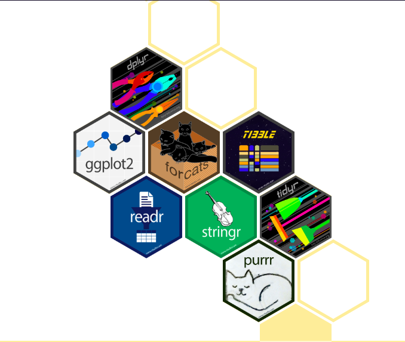
tidyverse philosophyThe principles underlying the tidyverse are:

 1
1
ggplot22Most real-world data is not tidy because data are often organized for goals other than analysis (i.e. data entry; not intentionally created as data…) and most people aren’t familiar with the principles of tidy data.
 1
1
bobsburgersRThe pak package is an alternative to using install.packages() and, for our purposes here, allows us to download our data directly from Github.
#> # A tibble: 10 × 6
#> season episode title line raw_text dialogue
#> <dbl> <dbl> <chr> <dbl> <chr> <chr>
#> 1 1 1 Human Flesh 1 <NA> <NA>
#> 2 1 1 Human Flesh 2 <NA> <NA>
#> 3 1 1 Human Flesh 3 <NA> <NA>
#> 4 1 1 Human Flesh 4 Listen, pep talk. Listen,…
#> 5 1 1 Human Flesh 5 Big day today. Big day…
#> 6 1 1 Human Flesh 6 It's our grand re-re-re-opening. It's ou…
#> 7 1 1 Human Flesh 7 It's labor day weekend, And it loo… It's la…
#> 8 1 1 Human Flesh 8 So we have to-- Big day for anothe… So we h…
#> 9 1 1 Human Flesh 9 Go ahead, sorry. Go ahea…
#> 10 1 1 Human Flesh 10 Go ahead, do your pep. Go ahea…library(tidytext)
library(textclean)
clean_text <- function(text) {
text |>
replace_html() |>
replace_non_ascii() |>
replace_contraction() |>
replace_white() |>
tolower() |>
str_remove_all(pattern = "[:punct:]|[:symbol:]")
}check_text() on your raw text variable to receive a print-out of possible functions you may want to use to clean your raw text data.
NAs in them
#> # A tibble: 5 × 1
#> raw_text
#> <chr>
#> 1 Yeah, come, Susmita.
#> 2 And the heat is off in the restaurant,
#> 3 Whoa! Oh.
#> 4 I was gonna give it to you for your birthday and, uh, surprise you, but it's…
#> 5 It'll be just like at the doctor, but we've both seen each other naked.#> # A tibble: 5 × 1
#> cleaned_text
#> <chr>
#> 1 yeah come susmita
#> 2 and the heat is off in the restaurant
#> 3 whoa oh
#> 4 i was gonna give it to you for your birthday and uh surprise you but it is in…
#> 5 it will be just like at the doctor but we have both seen each other naked
tidy_bob <- clean_bob |>
left_join(transcript_data |>
select(season, episode) |>
distinct() |>
mutate(episode_seq = row_number())) |>
select(-c(dialogue, raw_text)) |>
unnest_tokens(output = word, input = cleaned_text)
tidy_bobleft_join dataset simply creates an episode number that isn’t broken up by season
dialogue and raw_text columns
#> # A tibble: 1,127,930 × 6
#> season episode title line episode_seq word
#> <dbl> <dbl> <chr> <dbl> <int> <chr>
#> 1 1 1 Human Flesh 4 1 listen
#> 2 1 1 Human Flesh 4 1 pep
#> 3 1 1 Human Flesh 4 1 talk
#> 4 1 1 Human Flesh 5 1 big
#> 5 1 1 Human Flesh 5 1 day
#> 6 1 1 Human Flesh 5 1 today
#> 7 1 1 Human Flesh 6 1 it
#> 8 1 1 Human Flesh 6 1 is
#> 9 1 1 Human Flesh 6 1 our
#> 10 1 1 Human Flesh 6 1 grand
#> # ℹ 1,127,920 more rowsAs you might imagine, most words that appear in a corpus of text are going to be fairly boring and (depending on the analysis) not very insightful. These are what’s known as stop words.
#> # A tibble: 355,240 × 6
#> season episode title line episode_seq word
#> <dbl> <dbl> <chr> <dbl> <int> <chr>
#> 1 1 1 Human Flesh 4 1 listen
#> 2 1 1 Human Flesh 4 1 pep
#> 3 1 1 Human Flesh 4 1 talk
#> 4 1 1 Human Flesh 5 1 day
#> 5 1 1 Human Flesh 6 1 grand
#> 6 1 1 Human Flesh 6 1 rerereopening
#> 7 1 1 Human Flesh 7 1 labor
#> 8 1 1 Human Flesh 7 1 day
#> 9 1 1 Human Flesh 7 1 weekend
#> 10 1 1 Human Flesh 7 1 wharf
#> # ℹ 355,230 more rowsThe most basic statistic we can derive after these preliminary steps is calculating which words are used most often in our data.
group_by(word) |> summarise(n = n()) |> arrange(desc(n))
#> # A tibble: 25,814 × 2
#> word n
#> <chr> <int>
#> 1 yeah 6444
#> 2 uh 5320
#> 3 gonna 4687
#> 4 bob 3576
#> 5 tina 3157
#> 6 hey 2787
#> 7 gene 2557
#> 8 wait 2314
#> 9 god 2235
#> 10 louise 2002
#> # ℹ 25,804 more rowsobservable <- c("#1f77b4","#ff7f0e","#2ca02c","#d62728","#9467bd",
"#8c564b","#e377c2","#7f7f7f","#bcbd22","#17becf")
tidy_bob |>
group_by(season) |>
count(word, sort = TRUE) |>
slice_max(order_by = n, n = 7) |>
ungroup() |>
mutate(word_color = fct_reorder(word, n),
word = reorder_within(word, n, season)) |>
ggplot(aes(x = n, y = word, fill = word_color)) +
geom_col(show.legend = FALSE) +
labs(y = NULL) +
scale_y_reordered() +
scale_fill_manual(values = observable) +
facet_wrap( ~ season, scales = "free_y") +
theme_minimal(base_size = 18)reorder_within is a bit of a workaround, to apply our own color scheme we need to create a version of our variable explicitly for the fill argument (see this issue for reference)
reorder_within to properly label the final plots
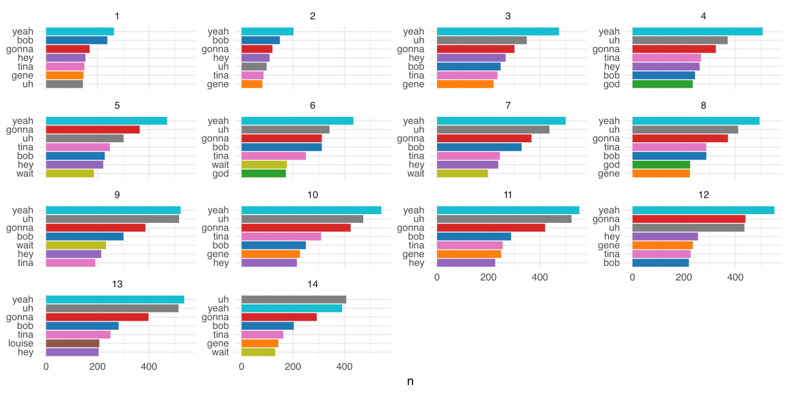
sentiments datasets#> # A tibble: 2,477 × 2
#> word value
#> <chr> <dbl>
#> 1 abandon -2
#> 2 abandoned -2
#> 3 abandons -2
#> 4 abducted -2
#> 5 abduction -2
#> 6 abductions -2
#> 7 abhor -3
#> 8 abhorred -3
#> 9 abhorrent -3
#> 10 abhors -3
#> # ℹ 2,467 more rows#> # A tibble: 6,786 × 2
#> word sentiment
#> <chr> <chr>
#> 1 2-faces negative
#> 2 abnormal negative
#> 3 abolish negative
#> 4 abominable negative
#> 5 abominably negative
#> 6 abominate negative
#> 7 abomination negative
#> 8 abort negative
#> 9 aborted negative
#> 10 aborts negative
#> # ℹ 6,776 more rows#> # A tibble: 13,872 × 2
#> word sentiment
#> <chr> <chr>
#> 1 abacus trust
#> 2 abandon fear
#> 3 abandon negative
#> 4 abandon sadness
#> 5 abandoned anger
#> 6 abandoned fear
#> 7 abandoned negative
#> 8 abandoned sadness
#> 9 abandonment anger
#> 10 abandonment fear
#> # ℹ 13,862 more rowsafinn <- tidy_bob |>
inner_join(get_sentiments("afinn")) |>
group_by(episode_seq) |>
summarise(sentiment = sum(value)) |>
mutate(method = "AFINN")
bing_and_nrc <- bind_rows(
tidy_bob |>
inner_join(get_sentiments("bing")) |>
mutate(method = "Bing et al."),
tidy_bob |>
inner_join(get_sentiments("nrc") |>
filter(sentiment %in% c("positive", "negative")),
relationship = "many-to-many"
) |>
mutate(method = "NRC")) |>
count(method, episode_seq, sentiment) |>
pivot_wider(names_from = sentiment,
values_from = n,
values_fill = 0) |>
mutate(sentiment = positive - negative)sentiment column and turns its values (positive, negative) into new columns
n should fill the two new positive and negative sentiment columns
NAs (that are created by the new data structure) should be given a value of 0
negative from positive counts
bind_rows(afinn, bing_and_nrc) |>
mutate(sign = ifelse(sentiment > 0, "positive", "negative")) |>
ggplot(aes(episode_seq, sentiment, fill = method, alpha = sign)) +
geom_col(show.legend = FALSE) +
scale_alpha_manual(values = c(0.5, 1)) +
scale_fill_manual(values = observable[1:3]) +
facet_wrap(~ method, ncol = 1, scales = "free_y") +
theme_minimal(base_size = 18)fill, and create differences in transparency (alpha) by sign
fill colors to our pre-defined observable palette
ggplot2’s minimal theme and increase the base font size
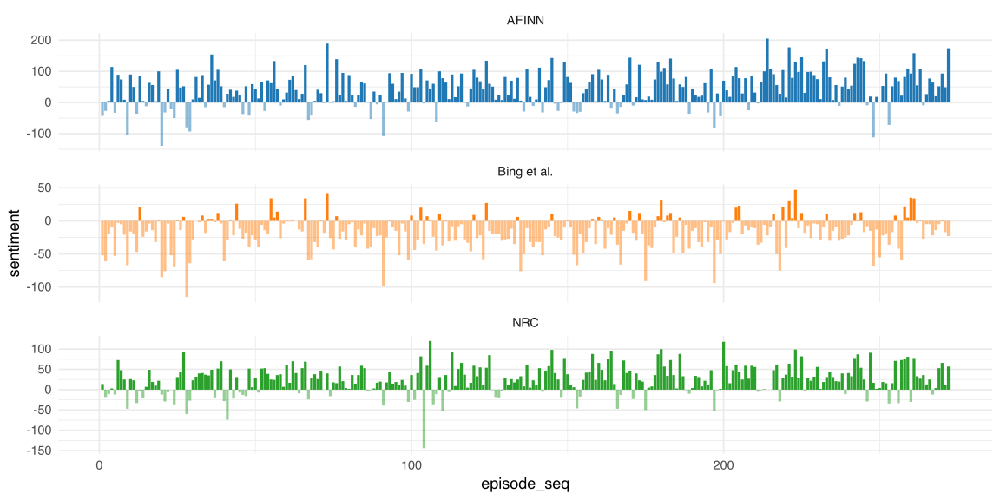
bind_rows(afinn, bing_and_nrc) |>
ggplot(aes(episode_seq, sentiment, color = method)) +
geom_smooth(se = FALSE, span = 0.4) +
scale_color_manual(values = observable[1:3]) +
theme_minimal(base_size = 18) +
theme(legend.position = "bottom") color here instead of fill since we’re mapping a line instead of a column
span; se controls whether to show confidence intervals)
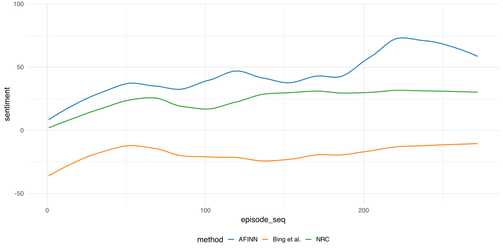
What if we want to see the top words broken down by sentiment and lexicon?
afinn <- tidy_bob |>
inner_join(get_sentiments("afinn")) |>
mutate(sentiment = if_else(value > 0, "positive", "negative")) |>
count(word, sentiment, sort = TRUE) |>
mutate(method = "AFINN")
bing <- tidy_bob |>
inner_join(get_sentiments("bing")) |>
count(word, sentiment, sort = TRUE) |>
mutate(method = "Bing et al.")
nrc <- tidy_bob |>
inner_join(get_sentiments("nrc") |>
filter(sentiment %in% c("positive", "negative"))) |>
count(word, sentiment, sort = TRUE) |>
mutate(method = "NRC")negative if value < 0 and positive if value > 0
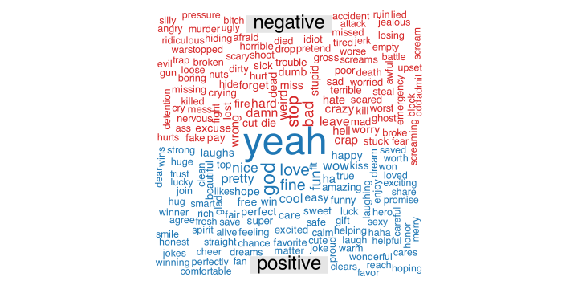
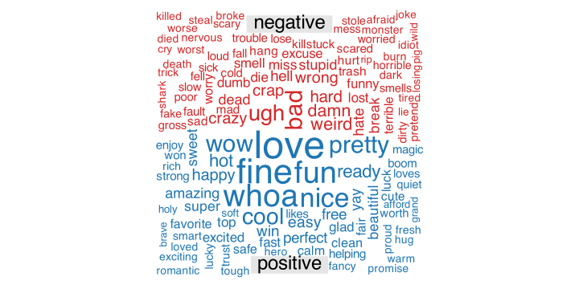
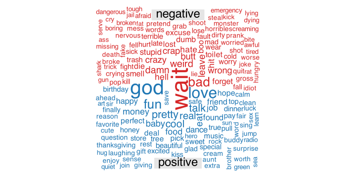
Most documents will have a lot of some words and not very many of much fewer words
season_words <- clean_bob |>
select(season, cleaned_text) |>
unnest_tokens(word, cleaned_text) |>
count(season, word, sort = TRUE)
season_words#> # A tibble: 83,633 × 3
#> season word n
#> <dbl> <chr> <int>
#> 1 13 i 4024
#> 2 12 i 3886
#> 3 11 i 3832
#> 4 10 i 3816
#> 5 8 i 3573
#> 6 7 i 3527
#> 7 4 i 3476
#> 8 9 i 3407
#> 9 5 i 3406
#> 10 3 i 3385
#> # ℹ 83,623 more rows#> # A tibble: 14 × 2
#> season total
#> <dbl> <int>
#> 1 1 44304
#> 2 2 31904
#> 3 3 84253
#> 4 4 86537
#> 5 5 85996
#> 6 6 78691
#> 7 7 90347
#> 8 8 90281
#> 9 9 92870
#> 10 10 94967
#> 11 11 95939
#> 12 12 97485
#> 13 13 97133
#> 14 14 57223library(colorspace)
library(ggridges)
season_words <- left_join(season_words, total_words)
observable_light <- lighten(observable, 0.5)
ggplot(season_words, aes(x = n/total, y = season, fill = as_factor(season))) +
geom_density_ridges(show.legend = FALSE) +
xlim(NA, 0.0009) +
scale_fill_manual(values = c(observable, observable_light)[order(rep(seq_along(observable), 2))][1:14]) +
theme_minimal(base_size = 18)ggridges package that allows you to visualize many density curves at once
observable and observable_light to utilize a larger (14) color palette
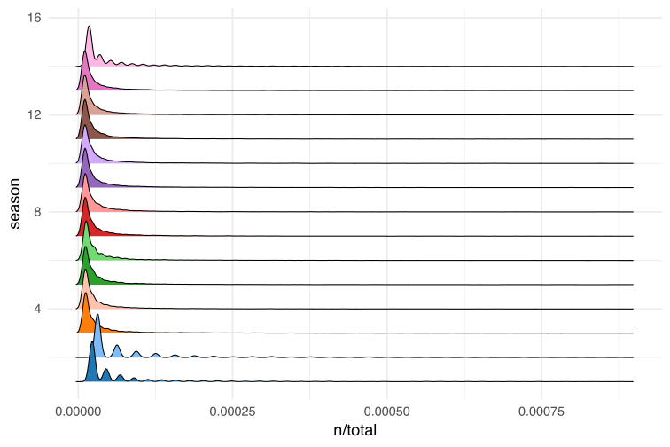
#> # A tibble: 83,633 × 7
#> season word n total tf idf tf_idf
#> <dbl> <chr> <int> <int> <dbl> <dbl> <dbl>
#> 1 13 i 4024 97133 0.0414 0 0
#> 2 12 i 3886 97485 0.0399 0 0
#> 3 11 i 3832 95939 0.0399 0 0
#> 4 10 i 3816 94967 0.0402 0 0
#> 5 8 i 3573 90281 0.0396 0 0
#> 6 7 i 3527 90347 0.0390 0 0
#> 7 4 i 3476 86537 0.0402 0 0
#> 8 9 i 3407 92870 0.0367 0 0
#> 9 5 i 3406 85996 0.0396 0 0
#> 10 3 i 3385 84253 0.0402 0 0
#> # ℹ 83,623 more rows#> # A tibble: 83,633 × 6
#> season word n tf idf tf_idf
#> <dbl> <chr> <int> <dbl> <dbl> <dbl>
#> 1 1 ok 66 0.00149 1.54 0.00229
#> 2 2 beefsquatch 23 0.000721 2.64 0.00190
#> 3 14 cricket 37 0.000647 2.64 0.00171
#> 4 2 rodney 16 0.000502 2.64 0.00132
#> 5 9 clem 45 0.000485 2.64 0.00128
#> 6 10 wharfy 43 0.000453 2.64 0.00119
#> 7 12 purrbo 42 0.000431 2.64 0.00114
#> 8 8 bleaken 38 0.000421 2.64 0.00111
#> 9 1 torpedo 31 0.000700 1.54 0.00108
#> 10 2 hanky 13 0.000407 2.64 0.00108
#> # ℹ 83,623 more rowsseason_tf_idf |>
group_by(season) |>
slice_max(tf_idf, n = 10) |>
ungroup() |>
ggplot(aes(tf_idf, fct_reorder(word, tf_idf), fill = as_factor(season))) +
geom_col(show.legend = FALSE) +
scale_fill_manual(values = c(observable, observable_light)[order(rep(seq_along(observable), 2))][1:14]) +
facet_wrap(~ season, ncol = 5, scales = "free") +
labs(x = "tf-idf", y = NULL) +
theme_minimal(base_size = 18)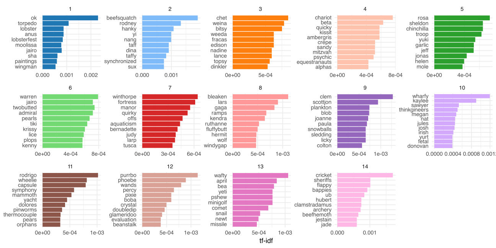
“You shall know a word
by the company it keeps.”
- John Rupert Firth (British linguist)
nested_eps <- tidy_bob |>
add_count(word) |>
filter(n >= 50) |>
select(episode_seq, word) |>
nest(words = c(word))
nested_eps n, for each word; equivalent to group_by(word) |> mutate(n = n())
nest creates a list-column; in this case, a dataframe of all words that occurred by each episode
#> # A tibble: 272 × 2
#> episode_seq words
#> <int> <list>
#> 1 1 <tibble [703 × 1]>
#> 2 2 <tibble [768 × 1]>
#> 3 3 <tibble [680 × 1]>
#> 4 4 <tibble [778 × 1]>
#> 5 5 <tibble [664 × 1]>
#> 6 6 <tibble [792 × 1]>
#> 7 7 <tibble [694 × 1]>
#> 8 8 <tibble [714 × 1]>
#> 9 9 <tibble [642 × 1]>
#> 10 10 <tibble [843 × 1]>
#> # ℹ 262 more rowslibrary(slider)
slide_windows <- function(tbl, window_size) {
skipgrams <- slider::slide(
tbl,
~.x,
.after = window_size - 1,
.step = 1,
.complete = TRUE
)
safe_mutate <- safely(mutate)
out <- map2(skipgrams,
1:length(skipgrams),
~ safe_mutate(.x, window_id = .y))
out |>
list_transpose() |>
pluck("result") |>
compact() |>
bind_rows()
}slide function here
TRUE, it only evaluates complete windows (i.e. entire window size is available from the current element)
skipgrams is a list-column containing a skipgram window for each word, for each episode
mutate that won’t break the function, rather it’ll capture results and errors in a list object for each skipgram
map2 mutates over each of these skipgrams to append a window_id column (which is the index of the skipgram for that epidose) so we can identify them when we unpack this extremely nested words list later
map2 is iterating through our skipgrams and their index numbers with is safe_mutate, which will create a list of 2 for each skipgram it iterates through, putting successfully mutated skipgram results into result and unsuccessfully mutated skipgram results into error
words list from a list of skipgrams (each with a list of result and error per our safe_mutate function) into its transposed version, in this case two lists (result and error), each composed of the full list of skipgrams for that episode
pluck pulls out the result list for each episode’s words column so now each episode’s list is composed of a list of tibbles for each skipgram widow with their corresponding window_id
words and window_ids into one complete tibble in words column corresponding to each episode
library(widyr)
library(furrr)
plan(multisession)
tidy_pmi <- nested_eps |>
mutate(words = future_map(words, \(x) slide_windows(x, 4L))) |>
unnest(words) |>
unite(window_id, episode_seq, window_id) |>
pairwise_pmi(word, window_id)words column and applies our slide_windows() function to each episode’s list with a skip-gram window of 4 words
words column so it is no longer an embedded list per episode but instead we have a tibble with columns for episode_seq, word, and window_id. Instead of 272 rows (1 row for each episode) we now have 925,280 rows (1 row for each word in a skip-gram window for all 272 episodes)
window_id column to be a combination of episode_seq and window_id, separated by _
word and its associated window_id to calculate the logarithm of probability of finding two words together, normalized by the probability of finding each of the words alone.
#> # A tibble: 420,500 × 3
#> item1 item2 pmi
#> <chr> <chr> <dbl>
#> 1 talk listen 0.773
#> 2 day listen -0.224
#> 3 weekend listen 0.0570
#> 4 wharf listen -0.490
#> 5 reason listen 0.801
#> 6 linda listen 0.110
#> 7 middle listen -1.46
#> 8 ahead listen -1.10
#> 9 sell listen 0.676
#> 10 burgers listen -0.322
#> # ℹ 420,490 more rowstidy_word_vectors <- tidy_pmi |>
widely_svd(
item1, item2, pmi,
nv = 100,
maxit = 1000
)
tidy_word_vectorstidy_pmi table, turns it into a wide matrix, and performs dimensionality reduction on it, and returns it in tidy format
item1 serves as the item we want to perform dimensionality reduction on, item2 is the feature that links items to one another, and pmi is the value we’re reducing
#> # A tibble: 116,600 × 3
#> item1 dimension value
#> <chr> <dbl> <dbl>
#> 1 talk 1 0.0273
#> 2 day 1 0.0487
#> 3 weekend 1 -0.0351
#> 4 wharf 1 -0.0366
#> 5 reason 1 -0.0341
#> 6 linda 1 0.0604
#> 7 middle 1 -0.0319
#> 8 ahead 1 -0.0267
#> 9 sell 1 -0.0293
#> 10 burgers 1 -0.00294
#> # ℹ 116,590 more rowsWon’t You Be My Neighbor?
Won’t You Be My Neighbor?
Which words are close to each other in this new feature-space of word embeddings?
nearest_neighbors <- function(df, token) {
df |>
widely(
~ {
y <- .[rep(token, nrow(.)), ]
res <- rowSums(. * y) /
(sqrt(rowSums(. ^ 2)) * sqrt(sum(.[token, ] ^ 2)))
matrix(res, ncol = 1, dimnames = list(x = names(res)))
},
sort = TRUE
)(item1, dimension, value) |>
select(-item2)
}#> # A tibble: 1,166 × 2
#> item1 value
#> <chr> <dbl>
#> 1 weird 1
#> 2 makes 0.348
#> 3 sounds 0.315
#> 4 bad 0.313
#> 5 crazy 0.303
#> 6 uhhuh 0.271
#> 7 hiding 0.259
#> 8 bobby 0.252
#> 9 pig 0.252
#> 10 havent 0.247
#> # ℹ 1,156 more rows#> # A tibble: 1,166 × 2
#> item1 value
#> <chr> <dbl>
#> 1 jimmy 1
#> 2 jr 0.596
#> 3 pesto 0.502
#> 4 zeke 0.398
#> 5 trev 0.375
#> 6 told 0.371
#> 7 pestos 0.356
#> 8 friend 0.291
#> 9 butt 0.267
#> 10 pizza 0.260
#> # ℹ 1,156 more rowstidy_word_vectors |>
filter(dimension <= 9) |>
mutate(sign = if_else(value > 0, "positive", "negative")) |>
group_by(dimension) |>
top_n(10, abs(value)) |>
ungroup() |>
mutate(item1 = reorder_within(item1, value, dimension)) |>
ggplot(aes(item1, value, fill = as_factor(dimension), alpha = sign)) +
geom_col(show.legend = FALSE) +
facet_wrap(~ dimension, scales = "free_y", ncol = 3) +
scale_x_reordered() +
scale_fill_manual(values = observable[1:9]) +
scale_alpha_manual(values = c(0.5, 1)) +
coord_flip() +
labs(
x = NULL,
y = "Value",
title = "First 9 principal components for text of Bob's Burgers scripts",
subtitle = "Top words contributing to the components that explain the most variation") +
theme_minimal(base_size = 18)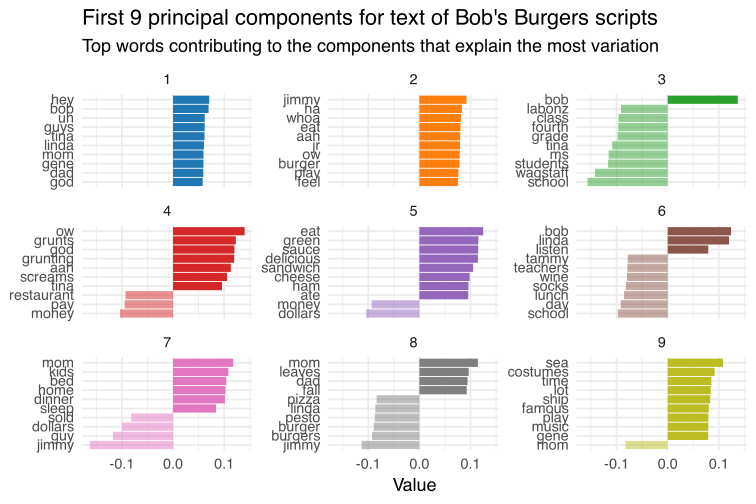
wordsalad package which provides some convenient functions to access some of the more popular pre-trained embeddingslibrary(wordsalad)
glove_word_vec <-
glove(text = clean_bob$cleaned_text,
dim = 100,
window = 4,
min_count = 50,
stopwords = stop_words$word,
composition = "tibble")
glove_word_vec#> # A tibble: 1,166 × 101
#> tokens V1 V2 V3 V4 V5 V6 V7 V8
#> <chr> <dbl> <dbl> <dbl> <dbl> <dbl> <dbl> <dbl> <dbl>
#> 1 aa 0.0849 -0.599 0.275 -0.233 0.0862 -0.104 -0.0301 -0.169
#> 2 admit 0.718 -0.213 -0.211 -0.0504 0.508 -0.104 -0.0441 0.304
#> 3 breaking -0.131 0.569 -0.236 -0.00908 0.447 -0.302 -0.307 0.212
#> 4 ceiling -0.353 -0.346 -0.356 -0.418 0.0683 -0.0663 0.176 -0.183
#> 5 character -0.158 0.423 0.889 -0.247 0.536 0.0749 0.138 0.902
#> 6 cleaning 0.0753 -0.0813 -0.0965 -0.205 -0.260 0.207 0.933 -0.117
#> 7 closet 0.0156 0.157 0.391 -0.566 0.188 -0.189 0.506 0.354
#> 8 college -0.301 0.312 0.138 0.219 -0.390 0.218 -0.428 -0.227
#> 9 corn -0.251 -0.313 -0.508 -0.470 -0.393 0.269 -0.130 0.0282
#> 10 destroy 0.314 0.0674 0.642 0.161 -0.434 -0.0652 0.770 0.00947
#> # ℹ 1,156 more rows
#> # ℹ 92 more variables: V9 <dbl>, V10 <dbl>, V11 <dbl>, V12 <dbl>, V13 <dbl>,
#> # V14 <dbl>, V15 <dbl>, V16 <dbl>, V17 <dbl>, V18 <dbl>, V19 <dbl>,
#> # V20 <dbl>, V21 <dbl>, V22 <dbl>, V23 <dbl>, V24 <dbl>, V25 <dbl>,
#> # V26 <dbl>, V27 <dbl>, V28 <dbl>, V29 <dbl>, V30 <dbl>, V31 <dbl>,
#> # V32 <dbl>, V33 <dbl>, V34 <dbl>, V35 <dbl>, V36 <dbl>, V37 <dbl>,
#> # V38 <dbl>, V39 <dbl>, V40 <dbl>, V41 <dbl>, V42 <dbl>, V43 <dbl>, …#> # A tibble: 116,600 × 3
#> item1 dimension value
#> <chr> <int> <dbl>
#> 1 aa 1 0.0849
#> 2 aa 2 -0.599
#> 3 aa 3 0.275
#> 4 aa 4 -0.233
#> 5 aa 5 0.0862
#> 6 aa 6 -0.104
#> 7 aa 7 -0.0301
#> 8 aa 8 -0.169
#> 9 aa 9 0.344
#> 10 aa 10 0.796
#> # ℹ 116,590 more rowstidy_glove |>
filter(dimension <= 9) |>
mutate(sign = if_else(value > 0, "positive", "negative")) |>
group_by(dimension) |>
top_n(10, abs(value)) |>
ungroup() |>
mutate(item1 = reorder_within(item1, value, dimension)) |>
ggplot(aes(item1, value, fill = as_factor(dimension), alpha = sign)) +
geom_col(show.legend = FALSE) +
facet_wrap(~dimension, scales = "free_y", ncol = 3) +
scale_x_reordered() +
scale_fill_manual(values = observable[1:9]) +
scale_alpha_manual(values = c(0.5, 1)) +
coord_flip() +
labs(
x = NULL,
y = "Value",
title = "First 9 principal components for text of Bob's Burgers scripts using GloVe word embeddings",
subtitle = "Top words contributing to the components that explain the most variation") +
theme_minimal(base_size = 18)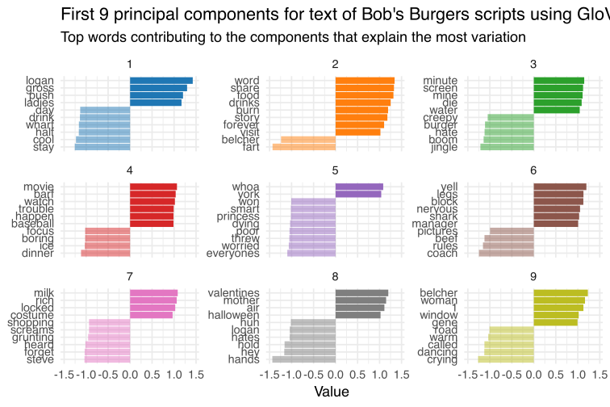
LDA is a mathematical method for estimating
both of these at the same time: finding the
mixture of words that is associated with each
topic, while also determining the mixture
of topics that describes each document.
library(topicmodels)
bob_matrix <- season_words |>
anti_join(stop_words) |>
cast_dtm(season, word, n)
bob_matrix#> <<DocumentTermMatrix (documents: 14, terms: 25814)>>
#> Non-/sparse entries: 76935/284461
#> Sparsity : 79%
#> Maximal term length: 28
#> Weighting : term frequency (tf)#> [1] "11" "12" "10" "13" "9" "4" "7" "8" "3" "5" "6" "14" "1" "2"#> [1] "yeah" "uh" "gonna" "bob" "tina" "hey" "gene" "god"
#> [9] "wait" "louise" "teddy" "guys" "kids" "time" "dad" "linda"
#> [17] "mom" "love" "um" "day" "huh" "ii" "people" "boo"
#> [25] "fine" "stop" "whoa" "ah" "fun" "lot" "nice" "lin"
#> [33] "bobby" "stuff" "guess" "ooh" "cat" "pretty" "house" "school"
#> [41] "couch" "bad" "ha" "aah" "jimmy" "coming" "ow" "cool"
#> [49] "feel" "home"#> A LDA_VEM topic model with 5 topics.#> # A tibble: 129,070 × 3
#> topic term beta
#> <int> <chr> <dbl>
#> 1 1 yeah 0.0180
#> 2 2 yeah 0.0179
#> 3 3 yeah 0.0191
#> 4 4 yeah 0.0173
#> 5 5 yeah 0.0181
#> 6 1 uh 0.0128
#> 7 2 uh 0.0141
#> 8 3 uh 0.0187
#> 9 4 uh 0.0158
#> 10 5 uh 0.0136
#> # ℹ 129,060 more rowsbob_top_terms <- bob_topics |>
group_by(topic) |>
slice_max(beta, n = 10) |>
ungroup() |>
arrange(topic, -beta)
bob_top_terms#> # A tibble: 50 × 3
#> topic term beta
#> <int> <chr> <dbl>
#> 1 1 yeah 0.0180
#> 2 1 uh 0.0128
#> 3 1 bob 0.0120
#> 4 1 gonna 0.0120
#> 5 1 hey 0.00958
#> 6 1 tina 0.00891
#> 7 1 gene 0.00774
#> 8 1 god 0.00627
#> 9 1 dad 0.00615
#> 10 1 wait 0.00607
#> # ℹ 40 more rows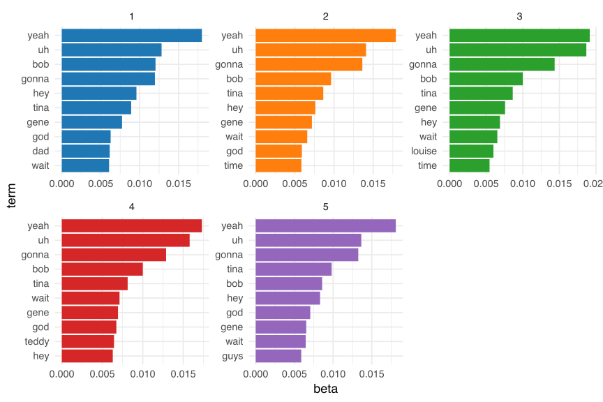
#> # A tibble: 70 × 3
#> document topic gamma
#> <chr> <int> <dbl>
#> 1 11 1 0.000000666
#> 2 12 1 0.000000668
#> 3 10 1 0.000000668
#> 4 13 1 0.000000671
#> 5 9 1 0.000000660
#> 6 4 1 0.000000741
#> 7 7 1 1.00
#> 8 8 1 0.000000699
#> 9 3 1 1.00
#> 10 5 1 0.00232
#> # ℹ 60 more rowsbob_documents |>
mutate(document = fct(document, levels = seq(1:14) |> as.character())) |>
group_by(topic) |>
slice_max(gamma, n = 10) |>
ungroup() |>
arrange(topic, -gamma) |>
ggplot(aes(gamma, document, fill = factor(topic))) +
geom_col(show.legend = FALSE, alpha = 0.75) +
scale_fill_manual(values = observable[1:5]) +
theme_minimal(base_size = 18)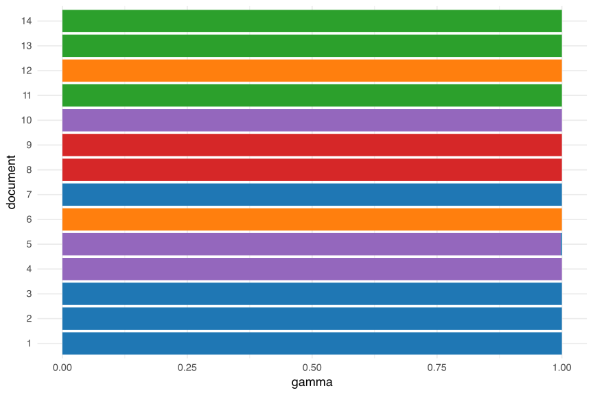
A better example:
#> # A tibble: 5 × 2
#> author title
#> <chr> <chr>
#> 1 Marx, Karl "The Communist Manifesto"
#> 2 Engels, Friedrich "The Communist Manifesto"
#> 3 Du Bois, W. E. B. (William Edward Burghardt) "The Souls of Black Folk"
#> 4 Veblen, Thorstein "The Theory of the Leisure Class"
#> 5 Wells-Barnett, Ida B. "The Red Record\nTabulated Stati…books <- books |>
distinct(text, .keep_all = TRUE) |>
mutate(author = if_else(author == "Marx, Karl",
"Marx, Karl; Engels, Friedrich",
author),
title = if_else(str_detect(title, "The Red Record"),
"The Red Record",
title))
books#> # A tibble: 19,636 × 4
#> gutenberg_id text title author
#> <int> <chr> <chr> <chr>
#> 1 61 "The Communist Manifesto" The … Marx,…
#> 2 61 "" The … Marx,…
#> 3 61 "by Karl Marx and Friedrich Engels" The … Marx,…
#> 4 61 "[From the English edition of 1888, edited by Frie… The … Marx,…
#> 5 61 "Contents" The … Marx,…
#> 6 61 " I. BOURGEOIS AND PROLETARIANS" The … Marx,…
#> 7 61 " II. PROLETARIANS AND COMMUNISTS" The … Marx,…
#> 8 61 " III. SOCIALIST AND COMMUNIST LITERATURE" The … Marx,…
#> 9 61 " IV. POSITION OF THE COMMUNISTS IN RELATION TO TH… The … Marx,…
#> 10 61 "A spectre is haunting Europe—the spectre of Commu… The … Marx,…
#> # ℹ 19,626 more rowsby_section <- books |>
filter(text != "") |>
mutate(text = str_remove_all(text, "[:digit:]"),
word_count = str_count(text, "\\S+")) |>
group_by(title) |>
mutate(cumulative_words = cumsum(word_count),
row_chunk = ceiling(cumulative_words / 2000)) |>
group_by(title, row_chunk) |>
summarize(section = str_c(text, collapse = " "), .groups = "drop") |>
unite(document, title, row_chunk, sep = "_", remove = FALSE) |>
select(document, section)
by_sectiontext column
row_chunk index that groups observations of ~ 2000 words together
row_chunk indices together so each book section is about the same length
title and row_chunk into a new variable called document, separated by _
#> # A tibble: 112 × 2
#> document section
#> <chr> <chr>
#> 1 The Communist Manifesto_1 "The Communist Manifesto by Karl Marx and Friedric…
#> 2 The Communist Manifesto_2 "powers of the nether world whom he has called up …
#> 3 The Communist Manifesto_3 "the bourgeois family-relations; modern industrial…
#> 4 The Communist Manifesto_4 "abolition of bourgeois property, the standard of …
#> 5 The Communist Manifesto_5 "and deserted with loud and irreverent laughter. O…
#> 6 The Communist Manifesto_6 "Bourgeois Socialism attains adequate expression, …
#> 7 The Red Record_1 "The Red Record: Tabulated Statistics and Alleged …
#> 8 The Red Record_2 "describe as such? Not by any means. With the Sout…
#> 9 The Red Record_3 "Va.; Nov. , Samuel Motlow, Lynchburg, Va.; Nov. ,…
#> 10 The Red Record_4 " Ford was greatly hurt and the Negro was held to…
#> # ℹ 102 more rows#> # A tibble: 221,458 × 2
#> document word
#> <chr> <chr>
#> 1 The Communist Manifesto_1 the
#> 2 The Communist Manifesto_1 communist
#> 3 The Communist Manifesto_1 manifesto
#> 4 The Communist Manifesto_1 by
#> 5 The Communist Manifesto_1 karl
#> 6 The Communist Manifesto_1 marx
#> 7 The Communist Manifesto_1 and
#> 8 The Communist Manifesto_1 friedrich
#> 9 The Communist Manifesto_1 engels
#> 10 The Communist Manifesto_1 from
#> # ℹ 221,448 more rows#> # A tibble: 56,260 × 3
#> document word n
#> <chr> <chr> <int>
#> 1 The Theory of the Leisure Class_43 class 41
#> 2 The Theory of the Leisure Class_45 class 37
#> 3 The Souls of Black Folk_26 negro 34
#> 4 The Theory of the Leisure Class_26 life 34
#> 5 The Communist Manifesto_3 property 33
#> 6 The Red Record_12 white 33
#> 7 The Theory of the Leisure Class_1 class 32
#> 8 The Theory of the Leisure Class_51 class 32
#> 9 The Red Record_1 white 31
#> 10 The Theory of the Leisure Class_33 class 31
#> # ℹ 56,250 more rowsBack into the matrix…
Back into the matrix…
#> <<DocumentTermMatrix (documents: 112, terms: 13844)>>
#> Non-/sparse entries: 56260/1494268
#> Sparsity : 96%
#> Maximal term length: 19
#> Weighting : term frequency (tf)#> A LDA_VEM topic model with 4 topics.#> # A tibble: 55,376 × 3
#> topic term beta
#> <int> <chr> <dbl>
#> 1 2 class 0.0216
#> 2 2 leisure 0.0163
#> 3 1 life 0.0161
#> 4 2 life 0.0127
#> 5 3 negro 0.0110
#> 6 3 white 0.00946
#> 7 4 life 0.00904
#> 8 1 class 0.00884
#> 9 2 economic 0.00795
#> 10 3 black 0.00774
#> # ℹ 55,366 more rowstop_terms <- sections_topics |>
group_by(topic) |>
slice_max(beta, n = 5) |>
ungroup() |>
arrange(topic, -beta)
top_terms |>
mutate(term = reorder_within(term, beta, topic)) |>
ggplot(aes(beta, term, fill = factor(topic))) +
geom_col(show.legend = FALSE) +
scale_fill_manual(values = observable[1:4]) +
facet_wrap(~ topic, scales = "free") +
scale_y_reordered() +
theme_minimal(base_size = 18)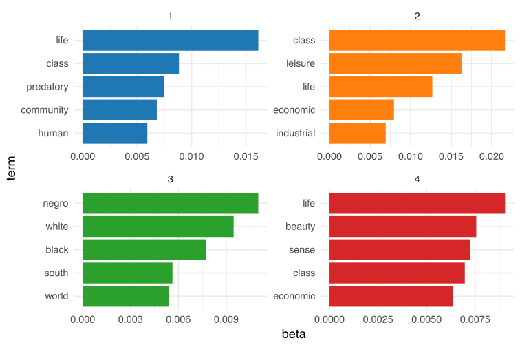
#> # A tibble: 448 × 3
#> document topic gamma
#> <chr> <int> <dbl>
#> 1 The Theory of the Leisure Class_43 1 0.0000349
#> 2 The Theory of the Leisure Class_45 1 0.0000349
#> 3 The Souls of Black Folk_26 1 0.0000320
#> 4 The Theory of the Leisure Class_26 1 1.00
#> 5 The Communist Manifesto_3 1 1.00
#> 6 The Red Record_12 1 0.0000343
#> 7 The Theory of the Leisure Class_1 1 0.0000347
#> 8 The Theory of the Leisure Class_51 1 0.0000372
#> 9 The Red Record_1 1 0.0000351
#> 10 The Theory of the Leisure Class_33 1 0.799
#> # ℹ 438 more rowssections_gamma <- sections_gamma |>
separate(document, c("title", "section"), sep = "_", convert = TRUE)
sections_gamma |>
mutate(title = reorder(title, gamma * topic)) |>
ggplot(aes(factor(topic), gamma, fill = factor(topic))) +
geom_boxplot(alpha = 0.5, show.legend = FALSE) +
scale_fill_manual(values = observable[1:4]) +
facet_wrap(~ title) +
labs(x = "topic", y = expression(gamma)) +
theme_minimal(base_size = 18)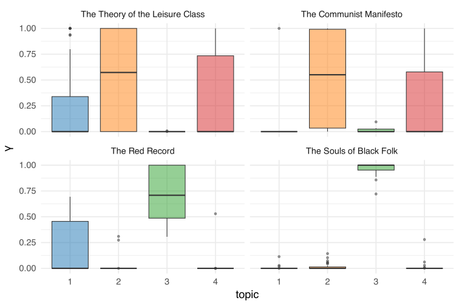
section_classifications <- sections_gamma |>
group_by(title, section) |>
slice_max(gamma) |>
ungroup()
section_classifications#> # A tibble: 112 × 4
#> title section topic gamma
#> <chr> <int> <int> <dbl>
#> 1 The Communist Manifesto 1 4 1.00
#> 2 The Communist Manifesto 2 2 1.00
#> 3 The Communist Manifesto 3 1 1.00
#> 4 The Communist Manifesto 4 4 0.771
#> 5 The Communist Manifesto 5 2 0.967
#> 6 The Communist Manifesto 6 2 1.00
#> 7 The Red Record 1 3 1.00
#> 8 The Red Record 2 3 1.00
#> 9 The Red Record 3 3 0.727
#> 10 The Red Record 4 1 0.646
#> # ℹ 102 more rowsbook_topics <- section_classifications |>
count(title, topic) |>
group_by(title) |>
slice_max(n, n = 1) |>
ungroup() |>
transmute(consensus = title, topic)
book_topics#> # A tibble: 4 × 2
#> consensus topic
#> <chr> <int>
#> 1 The Communist Manifesto 2
#> 2 The Red Record 3
#> 3 The Souls of Black Folk 3
#> 4 The Theory of the Leisure Class 2section_classifications |>
inner_join(book_topics, by = "topic") |>
filter(title != consensus) |>
count(title, consensus)#> # A tibble: 4 × 3
#> title consensus n
#> <chr> <chr> <int>
#> 1 The Communist Manifesto The Theory of the Leisure Class 3
#> 2 The Red Record The Souls of Black Folk 13
#> 3 The Souls of Black Folk The Red Record 35
#> 4 The Theory of the Leisure Class The Communist Manifesto 27#> # A tibble: 56,260 × 4
#> document term count .topic
#> <chr> <chr> <dbl> <dbl>
#> 1 The Theory of the Leisure Class_43 class 41 2
#> 2 The Theory of the Leisure Class_45 class 37 2
#> 3 The Souls of Black Folk_26 class 1 2
#> 4 The Theory of the Leisure Class_26 class 4 1
#> 5 The Communist Manifesto_3 class 16 1
#> 6 The Theory of the Leisure Class_1 class 32 2
#> 7 The Theory of the Leisure Class_51 class 32 2
#> 8 The Theory of the Leisure Class_33 class 31 1
#> 9 The Theory of the Leisure Class_28 class 30 2
#> 10 The Theory of the Leisure Class_30 class 5 1
#> # ℹ 56,250 more rowsassignments <- assignments |>
separate(document, c("title", "section"),
sep = "_", convert = TRUE) |>
inner_join(book_topics,
by = c(".topic" = "topic"))
assignmentsbook_topics to see which words were incorrectly classified
#> # A tibble: 80,430 × 6
#> title section term count .topic consensus
#> <chr> <int> <chr> <dbl> <dbl> <chr>
#> 1 The Theory of the Leisure Class 43 class 41 2 The Communist Man…
#> 2 The Theory of the Leisure Class 43 class 41 2 The Theory of the…
#> 3 The Theory of the Leisure Class 45 class 37 2 The Communist Man…
#> 4 The Theory of the Leisure Class 45 class 37 2 The Theory of the…
#> 5 The Souls of Black Folk 26 class 1 2 The Communist Man…
#> 6 The Souls of Black Folk 26 class 1 2 The Theory of the…
#> 7 The Theory of the Leisure Class 1 class 32 2 The Communist Man…
#> 8 The Theory of the Leisure Class 1 class 32 2 The Theory of the…
#> 9 The Theory of the Leisure Class 51 class 32 2 The Communist Man…
#> 10 The Theory of the Leisure Class 51 class 32 2 The Theory of the…
#> # ℹ 80,420 more rowslibrary(scales)
assignments |>
count(title, consensus, wt = count) |>
mutate(across(c(title, consensus), ~str_wrap(., 20))) |>
group_by(title) |>
mutate(percent = n / sum(n)) |>
ggplot(aes(consensus, title, fill = percent)) +
geom_tile() +
scale_fill_gradient2(high = observable_light[4], label = percent_format()) +
theme_minimal(base_size = 18) +
theme(axis.text.x = element_text(angle = 90, hjust = 1),
panel.grid = element_blank()) +
labs(x = "Book words were assigned to",
y = "Book words came from",
fill = "% of assignments")